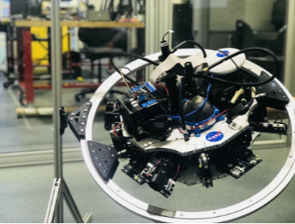
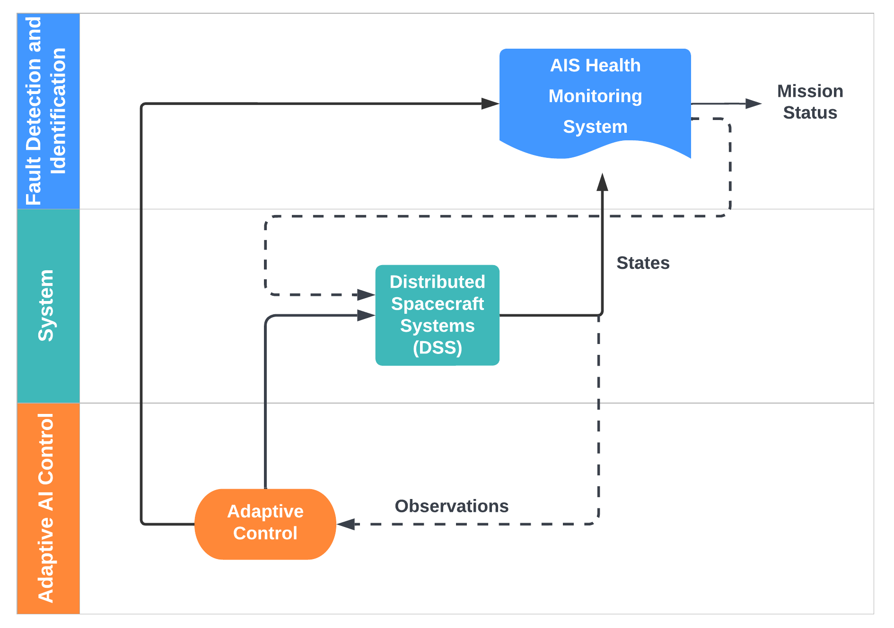
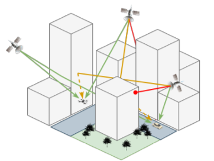
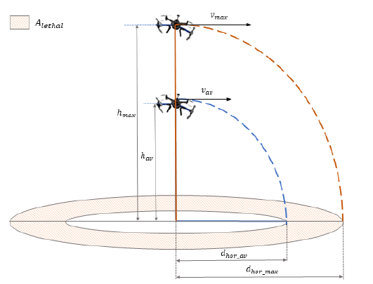
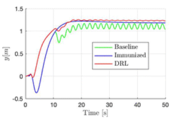
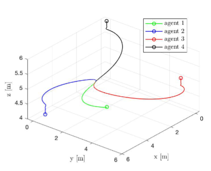

Welcome! My name is Tatiana Gutierrez, and I am a Level 2 Guidance, Navigation, and Controls Engineer at The Boeing Company.
I earned my B.Sc. in Civil Engineering from Universidad del Norte in Colombia and my M.Sc. in Aerospace Engineering from Embry-Riddle Aeronautical University with a Dynamics and Controls focus.
Furthermore, I am currently on the 3rd year of my PhD in Aerospace Engineering researching on safety-control.
I have a diverse engineering background ranging from dynamics and controls theory to embedded software and simulation development.
I excel at quickly picking up new skills and forming a practical understanding of complex ideas and systems.
At my current role in Boeing I have an opportunity to utilize that background to design, test, and debug flight controls systems for commercial airplane support and development.
I am very interested in space exploration and aviation, driven by a profound desire on advancing society and improving our collective future.
Exploring the complexities of these topics fuels my curiosity, and I am always eager to delve deeper into understanding the dynamics that govern our universe.
I am part of the BCA Primary Control Laws team, where I support the Common Block Point regression testing for 787 fleet and the certification efforts for the 737-10 MAX.
My responsibilities encompass leading the Model Coverage Analysis efforts to ensure structural coverage compliance on 737.
Furthermore, on the 787 project, I am involved in coding, testing, and analyzing results to verify and validate the implementation of flight control software against model based requirements.
My job also extends to identifying and addressing gaps in system-level requirements, conducting testing on the hardware-in-the-loop Integrated Test Vehicle, managing GIT repositories and reviewing test procedures and test reports submitted by other engineers.
Research
As a graduate student, I worked on projects broadly related to Multi-agent Systems, Optimal Control and Adaptive Control. I am interested in exploring trajectory optimization and safe-control methods for spacecraft and aircraft systems. My main goal involves developing an optimization framework for path reconfiguration when faults or unexpected situations occur, that threatens the mission goals.
Thesis
Health Management and Adaptive Control of Distributed Spacecraft Systems.Tatiana GutierrezEmbry-Riddle Aeronautical University - Master of Science in Aerospace Engineering, 2022
Thesis
This research applies an optimized health monitoring system capable of detecting nominal and off-nominal system conditions.
A simulation environment is developed for a fleet of spacecraft performing a low-Earth orbit inspection within close proximity of a target space asset.
An adaptive control based on Deep Reinforcement Learning using an Actor-Critic-Adverse architecture is implemented to achieve high levels of mission protection, especially under disturbances that might lead to performance degradation.
A comparison of different attitude controllers such as Nonlinear Dynamic Inversion and Pole Placement is presented.
Publications

Robotic Spacecraft Testbed for Validation and Verification of AI-Attitude Controllers. Sebastian Leon,
Tatiana Gutierrez,
Hever Moncayo AIAA SciTech Conference, 2024
This paper presents the design, validation, and verification of AI-based algorithms by implementing three attitude controllers onto a spacecraft
testbed: a Nonlinear Dynamic Inversion controller augmented with Artificial Immune System (NLDI-AIS), a Fuzzy-Logic based controller, and a Deep-Reinforcement Learning Adaptive Controller (DRL).

Data-driven Health Management System for Multi-SpacecraftFormation Flying. Tatiana Gutierrez,
Nolan Coulter,
Hever Moncayo,
Yashwanth Kumar Nakka,
Changrak Choi,
Amir Rahmani,
Akshita Gupta,
Dean Reiter AIAA SciTech Conference, 2023
Paper
The proposed HMS is applied to a design reference mission that involves a fleet of spacecraft performing an on-orbit inspectionin low Earth orbit. The performance and capabilities of the architecture are validated throughnumerical simulations where spacecraft in the network are subjected to various faults.

Modeling of GPS Degradation Conditions for Risk Assessment of UAS Operations in Urban Environments.Andrei Cuenca,
Tatiana Gutierrez,
Eduardo Morillo,
Brock Steinfeldt,
Hever Moncayo,
AIAA SciTech Conference, 2023
Paper
This paper aims to quantitively estimate the shadowing and multi-path effects for a simulated Unmanned Aerial Vehicle (UAV) mission within an urban environment scenario. Furthermore, the impact of signal degradation effects is analyzed by evaluating GPS constellation quality metrics such as the Dilution of Precision (DOP).

Development of a Simulation Environment for Validation and Verification of Small UAS Operations. Tatiana Gutierrez,
Andrei Cuenca,
Hever Moncayo,
Brock Steinfeldt,
AIAA SciTech Conference, 2022
Paper
This paper describes the design, integration, and implementation of a set of software tools to support validation and verification of guidance, navigation, and control strategies applied to unmanned system operations.

Distributed Intelligent Adaptive Controller for Disturbance Rejection in Multiagent Systems. D.F,
Hever Moncayo,
Christoph Aoun,
Tatiana Gutierrez Journalo of Aerospace Information Systems, 2022
Paper
This paper describes the design and development of a novel bioinspired distributed adaptive control architecture designed to increase the resilience of multiagent systems.
Numerical simulations are performed to evaluate the capabilities of this architecture to solve a consensus problem under bounded disturbances.
Stability analysis is presented using the Lyapunov direct method.

Comparison of an Adaptive-Immunized and an Adversarial Deep Learning Control Laws to Increase Resiliency in Distributed Cyber-Physical Systems D.F,
Hever Moncayo,
Christoph Aoun,
Tatiana Gutierrez AIAA SciTech Conference, 2022
Paper
This paper introduces a novel bio-inspired immunized-adaptive technique applied to a multi-agentconsensus control problem in the presence of bounded time-varying disturbances and cyber-physical communication attacks.
Analyses of the capabilities of the controller to reject thesedisturbances, and a comparison against an adversarial deep-reinforcement learning algorithmis presented.
Class Projects
Graduate Course June 2025,
Linear Multivariable Control @ University of Washington
In this project, I explored safety-critical control using Control Barrier Functions (CBFs). The goal was to enforce pitch constraints during a quadcopter flight.
Integrated the CBF constraints into a Quadratic Program (QP) optimization framework.
Used Python and CVXPY optimization library.
Internships
Software Development Intern May 2023 - August 2023,
I made modifications to simulation models (Matlab/Simulink), assisted with code bugfixes, builded user interface commands (C++, C#), assisted with the development/maintenance of application and embedded technologies.
Converted configurable subsystems to variant subsystems in Simulink Model
Implemented variant subsystems to switch between vehicles configuration.
Included new controls to Sim User Interface so GPS signal is reduced in certain conditions.
{kind=link}